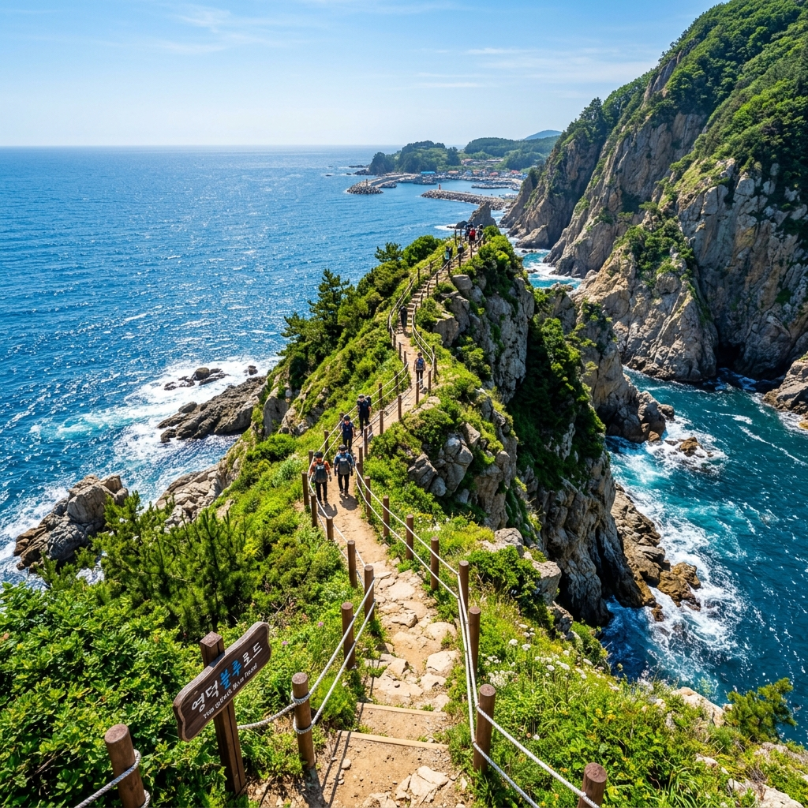
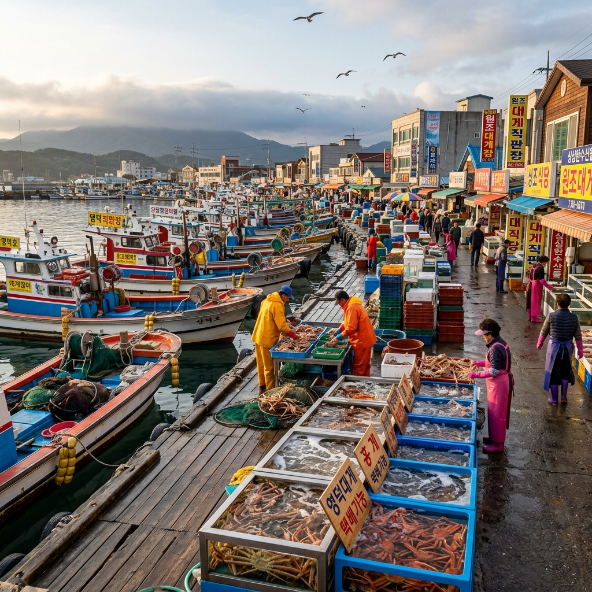
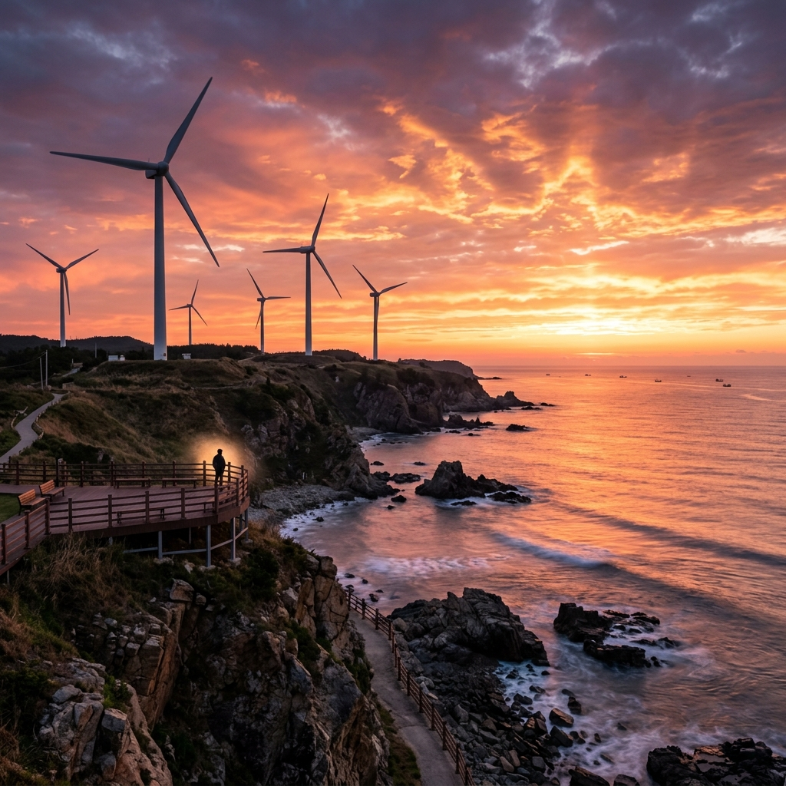

솔직히 말하면, 영덕 블루로드는 기대 이상이었습니다.
'해안 트레킹'이라는 말을 들으면 제주 올레길이나 남해 바래길을 먼저 떠올리겠지만, 동해 동쪽 끝 경북 영덕에서 만난 블루로드는 완전히 다른 종류의 감동이었습니다.
절벽 위에서 파도 소리를 들으며 걷는 것, 대게 어판장의 비린내와 바닷바람이 뒤섞이는 강구항의 분위기, 풍력발전기가 천천히 돌아가는 해맞이공원의 풍경까지 — 모두 영덕이 아니면 경험할 수 없는 장면들이었습니다.
이 글은 공식 가이드가 아닙니다. 직접 걷고 느낀 것들을 있는 그대로 씁니다.
영덕 블루로드는 총 4개 코스로 나뉘고 전체 거리는 64.6km입니다.
A코스(강구항~축산항, 14.5km)에서 시작해 D코스(대진~고래불해수욕장, 19.1km)로 끝나는 이 길은 동해 해안선을 거의 그대로 따라가는 구조입니다.
처음에는 '그냥 바닷가 산책이겠지'라고 가볍게 생각했는데, 막상 걸어보니 그런 생각이 얼마나 순진했는지 바로 깨달았습니다.
절벽 구간은 생각보다 험했고, 해풍은 생각보다 강했으며, 뷰는 상상을 초월했습니다.
이정표는 전반적으로 잘 정비되어 있고, 주요 갈림길마다 안내판이 있어 처음 방문하는 사람도 길을 잃을 걱정은 별로 없습니다.
다만 코스마다 편의점이나 식수대 위치가 달라서, 출발 전에 반드시 수분을 충분히 채워야 한다는 점은 꼭 기억해두세요.
블루로드는 걷기 좋은 길이기도 하지만, 걷고 싶어지게 만드는 길이기도 합니다.
파도 소리와 바닷바람, 쪽빛 수평선이 걷는 내내 지치지 않게 붙들어줍니다.
6월이라면 더욱 강력히 추천합니다. 폭염 전의 시원한 해풍과 맑은 시야가 동해의 절경을 가장 온전히 보여주는 계절이니까요.

A코스 출발은 강구항 공영주차장 옆 블루로드 안내판 앞입니다.
이른 아침 7시쯤 출발했는데, 공기가 차고 청명했습니다.
강구항을 벗어나자마자 해안 절벽 위로 오르는 구간이 시작되는데, 첫 번째 언덕을 넘으면 눈 앞이 확 트이면서 동해가 펼쳐집니다.
그 순간의 감동은 말로 표현하기가 어렵습니다.
수평선까지 막힘없이 이어지는 쪽빛 바다, 아래로 부서지는 하얀 파도, 그리고 트레킹화를 신은 내 발 아래의 까만 절벽 — 이 대비가 주는 공간감이 압도적이었습니다.
삼사해상공원은 A코스 중간 지점에 위치한 쉬어가기 좋은 포인트입니다.
대형 대게 조형물과 전망 데크가 있고, 주차장과 화장실도 있어 합류 지점으로도 자주 쓰입니다.
이후 고불봉 방향으로 이어지는 구간은 오르막이 있지만, 정상 부근에서 보이는 축산항 방향의 경치가 A코스 중 가장 뛰어납니다.
A코스 전체 소요 시간은 약 5시간이지만, 사진 찍고 쉬어가다 보면 6시간 가까이 걸릴 수도 있습니다.
종착지 축산항에 도착했을 때는 다리가 뻐근했지만, 항구에서 먹은 홍게 한 마리가 그 피로를 단번에 날려줬습니다.
B코스(축산항~영덕해맞이공원, 13.0km)는 4개 코스 중 바다와 가장 가까운 거리를 걷는 구간입니다.
경정 솔밭 구간이 특히 기억에 남습니다.
해안선을 따라 수십 년 수령의 노송들이 터널을 이루고, 그 사이를 걸으면 솔향과 바다 냄새가 동시에 납니다.
바람이 강한 날이면 파도 소리가 솔바람 소리와 섞여 묘하게 아름다운 자연의 합주가 들립니다.
B코스 중 일부 절벽 구간은 안전 로프가 설치되어 있습니다.
로프 밖으로 절대 나가지 마세요.
바위가 날카롭고 경사가 가파른 곳에서 발을 잘못 디디면 큰 부상으로 이어질 수 있습니다.
B코스 종점인 영덕해맞이공원은 생각보다 훨씬 규모가 큰 공원이었습니다.
풍력발전기가 12기나 돌아가고 있고, 그 사이를 걷는 느낌이 색다릅니다.
신재생에너지전시관도 운영 중이며, 전망대에서 바라보는 동해 조망이 B코스의 화룡점정입니다.
특히 일몰 무렵에 이 전망대에서 보는 바다는 오렌지빛으로 물들어 장관을 이룹니다.
솔직히 말하면 C·D코스는 A·B보다 훨씬 덜 알려져 있습니다.
C코스(영덕해맞이공원~고래불전망대, 18.0km, 약 6시간)와 D코스(대진~고래불해수욕장, 19.1km, 약 6.5시간)는 거리도 길고 인적도 드뭅니다.
바로 그 이유 때문에 오히려 이 코스를 좋아하는 사람들이 있습니다.
번잡함 없이 오롯이 자연과 마주하는 경험, 이따금 먼 수평선 위의 어선만 시야에 들어오는 고요함 — 그게 C·D코스의 매력입니다.
고래불해수욕장은 D코스의 종점으로, 약 2km에 달하는 모래사장이 펼쳐진 영덕 최대의 해수욕장입니다.
블루로드 64.6km를 완주한 뒤 이곳 모래사장에 발을 내딛는 순간의 감동은 종주 경험자들이 입을 모아 이야기하는 명장면입니다.
C·D코스는 각각 하루 코스이므로, A+B를 1일차, C+D를 2일차로 나눠 2박 3일 일정을 잡는 것이 가장 현실적입니다.
코스 중간에 영해면 소재지에서 숙박하면 편리하게 이어서 걸을 수 있습니다.
4개 코스 전체 종주(64.6km)에 도전하고 싶다면, 체력 훈련을 사전에 충분히 해두길 강력히 권고합니다.
많은 분들이 영덕 하면 대게를 먼저 떠올립니다.
그런데 대게의 공식 제철은 11월에서 5월까지입니다.
6월부터는 금어기가 시작되므로, 6월에 영덕을 찾으면 대게 대신 홍게(붉은 대게)를 만나게 됩니다.
홍게를 처음 접하는 분들은 대게에 비해 살이 적다는 선입견을 갖는 경우가 있지만, 직접 먹어보면 생각이 달라질 겁니다.
홍게의 속살은 달고 진한 감칠맛이 있어 중독성이 강합니다.
가격도 대게보다 저렴해서 오히려 가성비 면에서는 홍게 시즌이 더 낫다는 의견도 많습니다.
강구항 주변 식당가에서는 홍게찜, 홍게 탕, 홍게 게살 비빔밥 등 다양한 방식으로 즐길 수 있습니다.
꼭 한 가지 주의할 점은 '국내산 영덕 홍게'인지 확인하는 것입니다.
수입산 홍게와 국내산 영덕 홍게는 맛과 가격에서 분명히 차이가 납니다.
제대로 된 집이라면 수조에 살아있는 홍게를 보관하고 있습니다.

강구항은 트레킹 출발지이기 전에 그 자체로 둘러볼 거리가 많은 어항입니다.
항구 입구의 대형 대게 조형물은 영덕 여행의 첫 사진 명소로 손꼽힙니다.
실물 대게보다 훨씬 큰 이 조형물 앞에서 찍는 사진은 '여기가 영덕이다'라는 인증이자, 블루로드 도전의 선언이기도 합니다.
항구 주변 골목에는 어촌의 삶을 담은 벽화들이 곳곳에 그려져 있습니다.
빛바랜 담벼락 위의 그림들이 오히려 더 정겹고 진솔한 느낌을 줍니다.
삼사해상공원은 강구항에서 걸어서 올라갈 수 있는 해안 언덕 공원입니다.
이른 아침 방문하면 강구항 전체를 내려다보는 조망이 황금빛으로 물들어 있어, 사진 찍기에 최고의 타이밍입니다.
특히 항구에 정박한 배들이 잔잔한 수면에 반사되는 장면은 어떤 필터 없이도 그림 같습니다.
트레킹 시작 전날 저녁이나 다음 날 아침에 이곳에서 시간을 보내면 영덕 여행의 밀도가 훨씬 높아집니다.

첫 번째 방문에서 가장 후회한 것은 신발 선택이었습니다.
평소 신던 가벼운 운동화를 신고 갔는데, 자갈 해안과 절벽 경사 구간을 지나면서 발바닥이 너무 빨리 아파왔습니다.
영덕 블루로드는 반드시 밑창이 두껍고 미끄럼 방지 기능이 있는 트레킹화가 필요합니다.
두 번째 실수는 자외선 차단제를 너무 적게 바른 것이었습니다.
해안가는 수면 반사까지 더해져 자외선 지수가 산속보다 훨씬 높습니다.
SPF 50+ 선크림을 1~2시간 간격으로 덧발라야 하고, 챙 넓은 모자도 필수입니다.
세 번째 실수는 물을 너무 적게 챙긴 것이었습니다.
A코스 기준으로 중간에 편의점이 한두 군데 있지만, 그것에만 의존하면 위험합니다.
생수 최소 1.5L와 이온음료 1개를 반드시 챙기세요.
방풍 기능이 있는 얇은 재킷도 배낭에 넣어두면 해풍이 강한 날 절벽 구간에서 유용하게 씁니다.
스틱은 선택이지만, C·D코스처럼 장거리 구간에서는 있으면 무릎 보호에 확실히 도움이 됩니다.
영덕은 자가용이 훨씬 편리한 지역입니다.
서울에서 동해고속도로를 타면 영덕 IC까지 약 3시간 30분~4시간이 걸립니다.
강구항 공영주차장은 무료이고 규모도 상당해서 성수기가 아니면 자리 찾는 데 어려움은 없었습니다.
대중교통을 이용한다면 동서울터미널에서 영덕행 직행버스를 타는 것이 가장 편리합니다.
포항에서 시외버스를 이용하는 방법도 있는데, KTX 동대구 하차 후 포항행 연결 후 영덕행 버스를 탑니다.
코스 간 이동을 위한 농어촌 버스가 있지만 배차 간격이 길어서, 사전에 시간표를 꼭 확인하고 택시나 카풀을 대안으로 준비해두는 것이 좋습니다.
숙박은 강구항 주변에 다양한 선택지가 있습니다.
모텔, 게스트하우스, 펜션 모두 있고, 6월은 성수기 이전이라 숙박비가 저렴한 편입니다.
민박 형태의 숙소를 이용하면 주인 어르신께서 해주시는 반찬이 포함된 밥을 먹을 수 있는 경우도 있는데, 그게 식당보다 오히려 더 맛있었다는 후기가 많습니다.
2박 이상 계획이라면 영해면 소재지에도 숙소가 몇 곳 있으니 참고하세요.
영덕 블루로드를 다 걷고 나서 떠오른 생각은 '이건 분명히 또 올 것이다'였습니다.
걷는 내내 지루함이 없었고, 코스가 끝날 때마다 다음 코스가 궁금해졌습니다.
이런 분들께 특히 강력히 추천합니다.
제주 올레나 둘레길을 이미 경험해본 분이라면 동해 해안 절벽의 스케일이 전혀 다른 감동을 줄 것입니다.
도시에서 오래 지내다 바다를 그리워하는 분이라면, 블루로드 하루만으로도 그 갈증이 시원하게 해소됩니다.
대게나 홍게를 좋아하는 미식 여행자라면 트레킹 후 항구 식사가 완벽한 보상이 됩니다.
반면, 급하게 관광지를 돌아보는 스타일이라면 맞지 않을 수 있습니다.
블루로드는 빠르게 보는 여행이 아니라 천천히 걷고 느끼는 여행입니다.
최소 1박 2일, 가능하면 2박 3일 이상의 여유를 갖고 방문하세요.
6월, 아직 여름의 절정이 오기 전 동해를 온몸으로 느끼고 싶다면 영덕 블루로드가 지금 당장 답입니다.
함께 읽으면 좋은 글
서울 남산골한옥마을 단오 전통 문화 체험
전남 장흥 편백숲 우드랜드 초여름 치유 여행